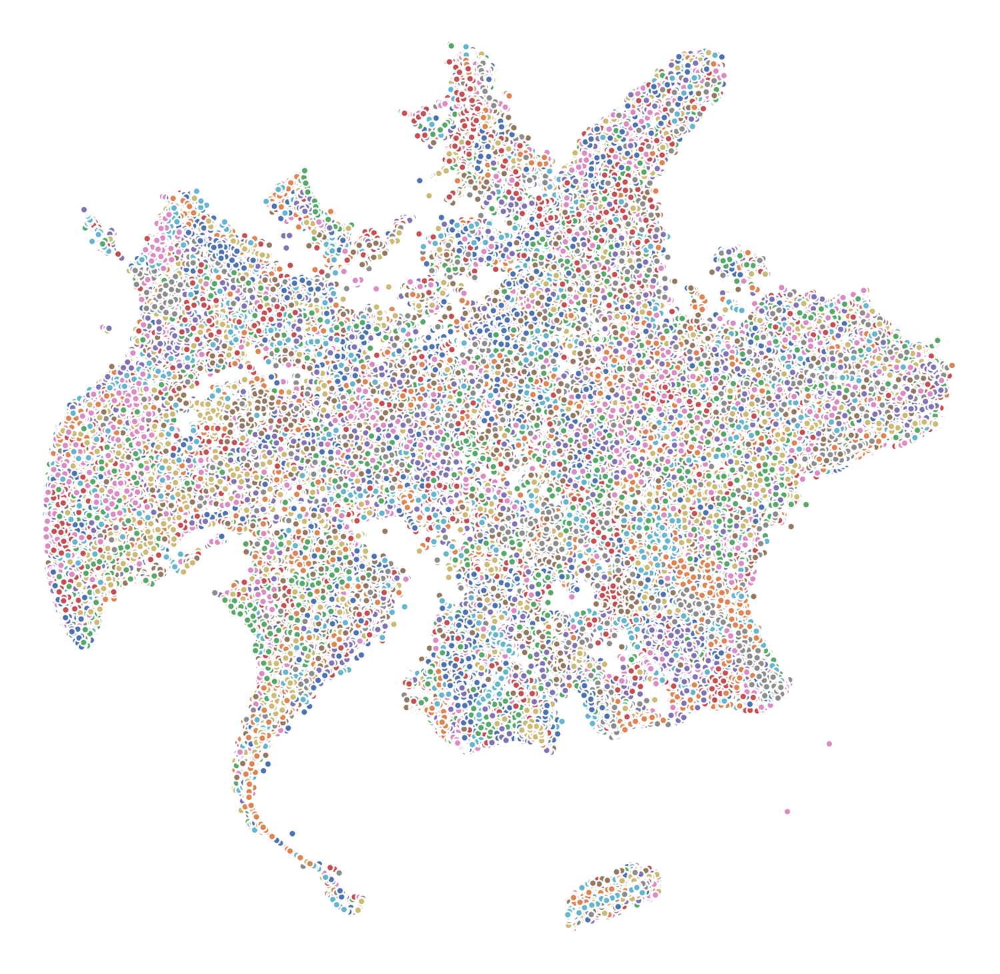
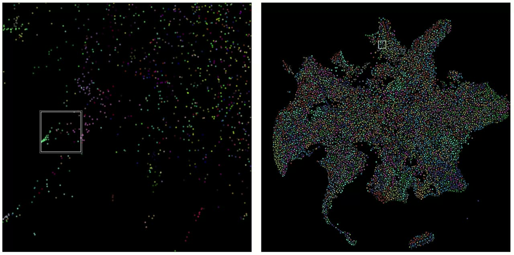
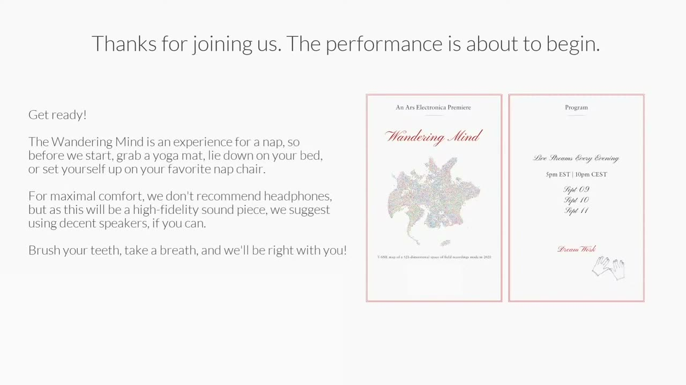
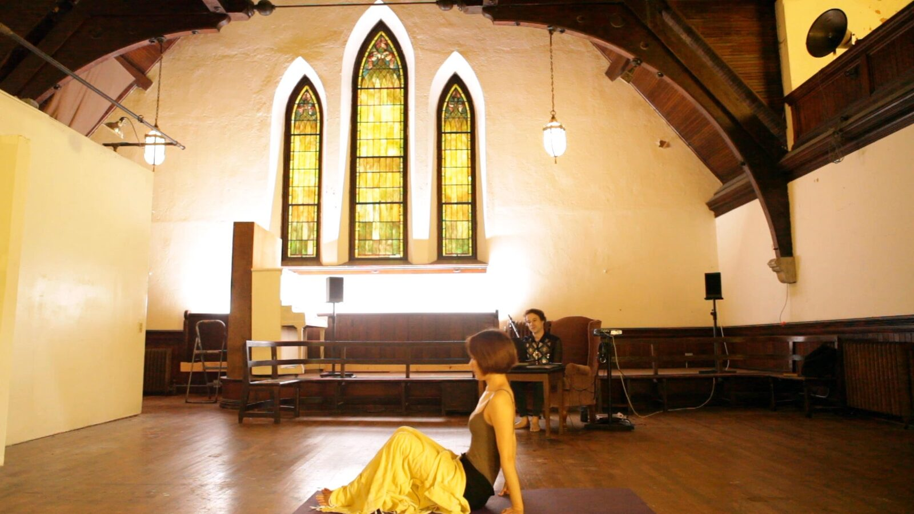

The Wandering Mind: Planetary Scale Dreaming in Latent Spaces
PROJECT DESCRIPTION
Does the Earth dream? Can our dreams mesh? In the Wandering Mind research project and performance series, we explore these questions by merging audience dreams and a massive data set of global field recordings.
In dreams we set sail on open ocean. Free from the larger sense-making constraints imposed by the waking mind, the dream state promises only local coherence: one thing leads to another in a process that can feel like wandering, influenced both by the subconscious mind as well as physical stimuli in our surroundings [1]. This so-called dream-work has an counterpart in a class of artificial intelligence (AI) algorithms called representation learning neural networks. They are self-supervised algorithms whose operation hinges on a kind of iterative, suffusing imagination. They extract compact representations of generalized data (sounds, text, sensing, etc) that uncover relationships between data samples: perceptual and semantic condensations that can facilitate travel outside of space and time. Applied to global sensing, these latent space connections are like sensory wormholes.
The Wandering Mind is a human-in-the-loop feedback system that merges an embedding space of audio field recordings into the unconscious or semi-conscious minds of a local and/or online audiences as they fall asleep. To create the performance platform, we scraped ~70,000 audio field recordings from websites like Radio Aporee and Freesound, and fed them to a neural network called YAMNet [2]. The network generates embeddings for each second of sound it consumes, producing ~30 million 521-dimensional points in the latent space. We then downsample to a more manageable 3 million points, each corresponding to a 10-second sound clip. In order to interact with the material, we unfold a 2-dimensional map using T-SNE [3]. Points that are close together on the map tend have some spectral and/or semantic similarities uncovered by the neural network.
Using a browser-based Web Audio interface, the performer moves a virtual listener around a zoomed-in portion of the larger map, dynamically loading and mixing as many as 30 short clips together at one time. This creates a continuous soundscape that can travel from under the ocean to the bustling city, morphing by gradually mixing over the data.
In previous online performances in 2020, we traded roles of performer and live sleeper: one person (the performer) would navigate the map while the other (the sleeper) lay in front of them on a mat for 30-40 minutes, dozing off. Viewing a live video stream that faded to black (sound only), the online audience is invited to lie down at the same time and allow themselves to drift off. The performer balances the sleeper’s trajectory into sleep, allowing quiet periods to lull the sleeper into hypnagogia and moving through louder areas of the map to stir the sleeper awake again.


Embeddings of 4000 field recordings made in the first 8 months of 2020, where each dot represents a 10s clip.
In the image above, each dot represents a 10-second sound clip plucked from the larger universe of recordings. This particular map is constructed from a small subset of the universe corresponding to field recordings made in the first 8 months of 2020. We used this 2020 map in previous performances, traveling between uncannily quiet urban centers, applause for medical workers, protests around the world, and a resurgent natural ecosystem.
PROGRAM NOTES
Does the Earth dream? Can our dreams mesh? In the Wandering Mind, we merge audience dreams and a massive data set of audio field recordings. In dreams, we set sail on open ocean. Freed from the sense-making constraints of the waking mind, the currents pull us through a process of wandering transformations, influenced by both our subconscious minds and our surroundings [1].
This dream-work reminds us of the operations of AI algorithms called representation learning neural networks, which uncover relationships between data samples that can facilitate travel outside of space and time. Applied to global recordings, the latent space connections are like sensory wormholes. To create the Wandering Mind platform, we fed ~70,000 field recordings scraped from the internet to a neural network called YAMNet [2], producing ~30 million 521-dimensional points corresponding to 1-second audio clips. We further reduce the dimensionality to 2-d, creating a traversable sound map.
In the 30 minute performance, we navigate over the map to create a continuous, morphing soundscape that mixes as many as 30 distinct recordings together at any given time, while the audience drifts between waking and sleep. For the best experience, we recommend finding a darkened space and a comfortable spot to lie down. There is no requirement to sleep. We only encourage you to allow the mind to wander.
PERFORMANCE REQUIREMENTS
The Wandering Mind is suited to both online and in-person performance contexts. We have done both types of performances during the 2020 lockdowns. Our performance interface is shown in the video below. It uses a web browser which connects to a local database of ~750GB of compressed audio. Embeddings and maps are precomputed and loaded into the web interface. The performer can adjust the zoom and size (roll-off) of the virtual listener (white frame box in the left panel), as well as other mixing parameters.

▶Performer interface, using the map of global field recordings from 2020. At left, the local working area, with the virtual listener represented as a white square, reflecting the roll-off parameter. At right, the global map, with the working area on the left represented by the smaller white square.
For online performances, we have used YouTube Live as our platform host, but any live streaming platform supported by the cross-platform OBS Studio would be trivial to add in. In the online version, we feature one or more performative audience members to demonstrate the process of lying down and breathing deeply as the performance begins. After a short period, the video stream fades to black and only the sound remains.
In-person performances require a dark or semi-darkened, comfortable space. Personal yoga mats or cushions work well for audiences to lie down a safe distance apart. In-person performances require stereo loudspeakers.
An in-person performance would require the following:
Comfortable open space (non-seated) that can be darkened
Yoga mats or cushions
Projector to show the performer interface for those that choose not to sleep
Stereo loudspeakers
In a hybrid in-person/online approach, multiple in-person groups could experience the online live performance together (where local COVID-19 restrictions allow) simultaneously in different places around the world.
MEDIA
 ▶
▶NIME 2021 Music Submission - Video Example: Performer #1

▶NIME 2021 Music Submission - Video Example: Performer #2


Image from Ars Electronica livestream; one performer navigates while the other sleeps along with the audience.
ACKNOWLEDGEMENTS
The artists and project leads, Gershon Dublon and Xin Liu (collectively known as slow immediate), acknowledge the generous support of Ars Electronica and the European ARTificial Intelligence Lab, which awarded slow immediate its inaugural residency in 2019. As presented here, the Wandering Mind was collaboratively produced with engineering and production support from Nicholas Gillian and Nan Zhao / Nayo. Future iterations of the work, as well as the development of several scientific offshoots of the project, are well underway in collaboration with DVIC and Pôle Leonard de Vinci, Paris. Special thanks to DVIC researchers Yliess Hati, Vincent Thevenin, Thomas Juldo, and principal investigator Clement Duhart.
Citations
- ↩Haar Horowitz, Adam, Cunningham, T. J., Maes, P., & Stickgold, R. (2020). Dormio: A targeted dream incubation device. Consciousness and Cognition, 83. https://doi.org/10.1016/j.concog.2020.102938
- ↩Plakal, M., & Ellis, D. (2020). YAMNet. Retrieved from https://github.com/tensorflow/models/tree/master/research/audioset/yamnet
- ↩van der Maaten, L., & Hinton, G. (2008). Visualizing Data using t-SNE. Journal of Machine Learning Research, 9(86), 2579–2605. Retrieved from http://jmlr.org/papers/v9/vandermaaten08a.html